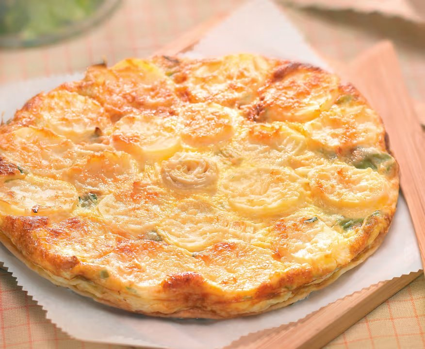

Quiche de pommes de terre et poireaux
Ingrédients
- 60 g de gruyère
- 500 g d'eau
- 0.5 c. à c. de sel
- 300 g de pommes de terre
- 300 g de blancs de poireau
- 3 pincées de sel
- 1 c. à c. d'huile de tournesol
- 35 g d'échalotes
- 1 c. à c. de margarine
- 3 oeufs
- 1 c. à s. de fécule de maïs
- 155 g de lait écrémé
- 2 pincées de poivre
- 1 c. à c. de muscade

Quiche sans pâte.
Préparation
Étape 1
Râper 60 g de gruyère 5 sec/vitesse 10. Réserver.
Étape 2
Mettre 500 g d'eau et 0.5 c. à c. de sel dans le bol, 300 g de pommes de terre en rondelles (1 cm) dans le panier, et 300 g de blancs de poireau émincés avec une pincée des 3 pincées de sel dans le Varoma. Cuire à la vapeur 20 min/Varoma/vitesse 1. Vider le bol.
Étape 3
Préchauffer le four à 180ºC. Huiler un moule à manqué (Ø 22 cm) avec 1 c. à c. d'huile de tournesol.
Étape 4
Hacher 35 g d'échalotes 5 sec/vitesse 5. Ajouter 1 c. à c. de margarine et rissoler 3 min/120ºC/vitesse 1. Ajouter les poireaux et rissoler 5 min/120ºC/vitesse 1, sans le gobelet.
Pendant ce temps, disposer les pommes de terre au fond du moule.
Étape 5
Ajouter 3 oeufs, 1 c. à s. de fécule de maïs, 155 g de lait écrémé, la moitié du gruyère, le reste du sel, 2 pincées de poivre et 1 c. à c. de muscade. Mélanger 20 sec/vitesse 3.
Étape 6
Verser sur les pommes de terre et parsemer du reste de gruyère. Cuire 25min à 180ºC. Laisser tiédir 10min avant de démouler.
Conseils
- Se mange tiède ou froid, avec une salade.